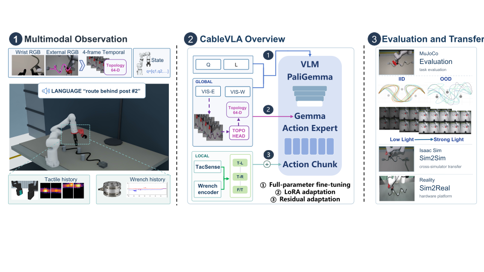
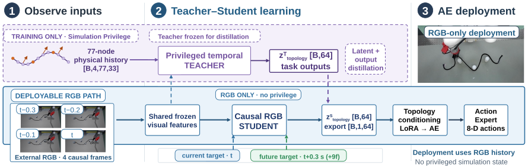
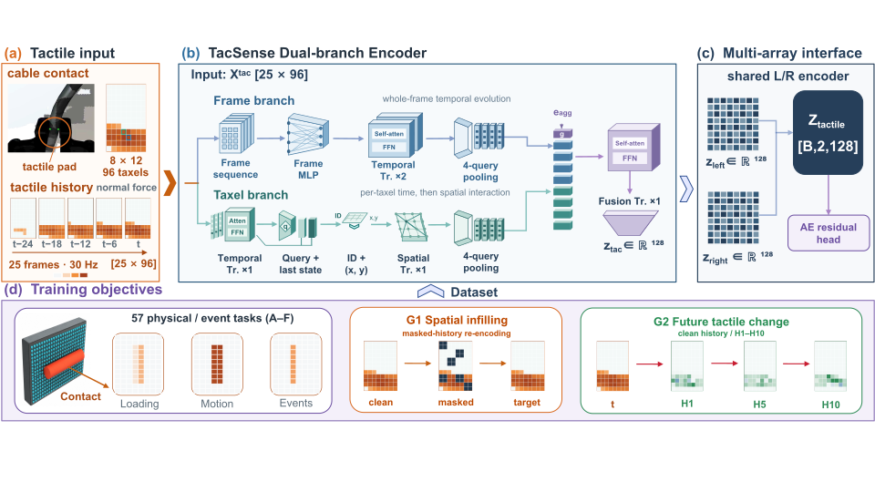
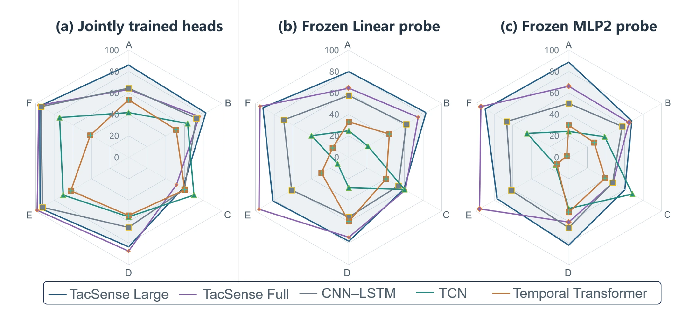

CableVLA: Simulation-Privileged Global–Local Representation Learning for Cable Routing
1 Huazhong University of Science and Technology 2 Harbin Institute of Technology
Full affiliations
1 State Key Laboratory of Intelligent Manufacturing Equipment and Technology, School of Mechanical Science and Engineering, Huazhong University of Science and Technology, Wuhan, China.
2 School of Mathematics, Harbin Institute of Technology, Harbin, China.

MuJoCo
Sim2Sim
Sim2Real
01 / Routing performance
CableVLA in Evaluation
Across 345 core-suite rollouts per policy, CableVLA reaches 84.9% success, compared with 62.6% for the π0.5-V visual baseline.
| Condition | Diffusion Policy | SmolVLA | π0.5-V | π0.5-V+Topo | CableVLA |
|---|---|---|---|---|---|
| Training-source replay | 17.3 | 9.3 | 69.3 | 70.7 | 85.3 |
| IID nominal | 30.7 | 10.7 | 86.7 | 80.0 | 97.3 |
| OOD nominal | 37.3 | 17.3 | 66.7 | 82.7 | 89.3 |
| Weak light | 36.7 | 3.3 | 33.3 | 40.0 | 70.0 |
| Strong light | 0.0 | 6.7 | 63.3 | 56.7 | 66.7 |
| Routing low friction | 53.3 | 23.3 | 53.3 | 60.0 | 83.3 |
| Camera-view change | 0.0 | 0.0 | 13.3 | 10.0 | 76.7 |
| Core total | 26.4 | 11.0 | 62.6 | 65.2 | 84.9 |
Each fixed policy is evaluated 3 times on the same 115 scenario–condition instances. Replay, IID, and OOD each contribute 75 rollouts; each perturbation contributes 30.
Topology conditioning improves OOD success from 66.7% to 82.7%. Force–tactile refinement raises camera-view-change success from 3/30 for the topology-conditioned parent to 23/30 for CableVLA.
Weak light
View change
Backtracking
Curvature
02 / Global cable topology
TopoHead

Collecting dynamic cable configurations
P1 relation establishment
P2 relation establishment
Learning topology from simulation
Encoding. TopoHead combines current and future prediction with teacher–student distillation. Its frozen RGB-only student encodes 4 frames spanning 0.3 s into a 64-dimensional representation that conditions the action expert.
Data collection. Collection emphasizes grasping and cable motion. The two videos above show P1 and P2 relation establishment, with synchronized observations and simulation ground-truth labels.
Topology and privilege. The animation illustrates centerline shape, cable–post relations and distances, lift state, and contact state. Segment-level poses, forces, and moments provide privileged information for training the temporal teacher.
03 / Local contact dynamics
TacSense
TacSense learns whole-field and taxel-local contact dynamics from resistive tactile histories, using simulated contact kinematics and event timing as supervision.

Recognizing complex contact events
TacSense combines a frame branch for whole-array temporal evolution with a taxel branch for per-taxel dynamics followed by spatial interaction. Both TacSense Large and a similarly sized CNN–LSTM detect simple contact nearly perfectly, but TacSense better recognizes slip transitions and retains this advantage under frozen-encoder probes.
| Event | CNN–LSTM | TacSense Large |
|---|---|---|
| Slip onset | 0.1694 | 0.8028 |
| Slip stop | 0.1120 | 0.3880 |

Controlled tactile data collection
Probes vary geometry, loading, motion, friction, and compliance. Paired event and control conditions separate contact events from collection-phase cues.
Normal loading and unloading
Translation and rotation
Contact loss and recontact
Partial boundary contact
Partial corner contact
Dynamic multi-contact
Simulation data collection scenes
These scenes use a simulation model of the Universa tactile sensor from Wuhan Huaweike Intelligent Technology Co., Ltd., China.
Factory grasp and insertion
Household pick-and-place
Restaurant pick-and-place
Gripper contact
04 / Cross-domain execution
Sim2Sim & Sim2Real
Each policy retains its MuJoCo-trained weights. Cross-simulator and real-robot comparisons examine transfer under changes in dynamics and sensing, without target-domain policy-weight updates.
Sim2Sim · Isaac Sim
MuJoCo-trained policy · 1× playbackSim2Real · Real robot
MuJoCo-trained policy · 10× playbackReference
Cite this work
@misc{teng2026cablevla,
title = {CableVLA: Simulation-Privileged Global-Local
Representation Learning for Cable Routing},
author = {Teng, Zhifei and Feng, Bo and Zou, Xiang and
Xiao, Jinpeng and Li, Min and Yin, Zhouping and Li, Yiqun},
year = {2026},
eprint = {2609.25606},
archivePrefix = {arXiv},
primaryClass = {cs.RO},
url = {https://arxiv.org/abs/2609.25606}
}